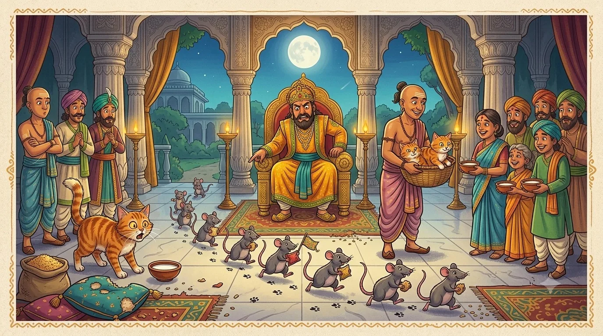
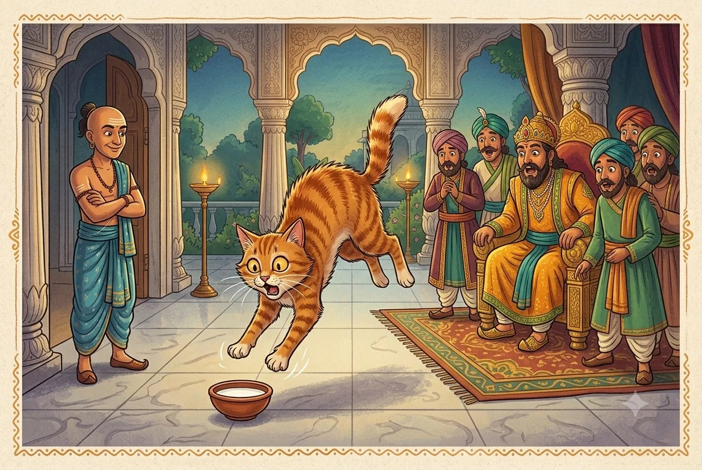

Tale ThreeThe Cat That Feared Milk
“A well-fed cat does not chase mice — and a well-fed helper does not always help.”
The royal palace had a problem, and it had whiskers. Rats! Rats in the granary, rats in the kitchens, rats nibbling the corners of the emperor's finest silk cushions. Something had to be done. So Krishnadevaraya, who liked a tidy solution, made a royal announcement.
"Every household in the city," declared the king, "shall keep a cat to hunt these rats. And so that no cat goes hungry, the royal treasury will give each family a cat and a daily bowl of milk to feed it. Let there be no more rats by the next full moon!" The whole city clapped. What a kind and clever king!

A humorous children's-book illustration in South-Indian folk-art style: a grand palace hall where a kind emperor on a golden throne points, exasperated, at a line of cheeky cartoon rats scampering across the floor carrying nibbled cushions and grain. To one side, a court minister hands out fluffy cats and little bowls of milk to smiling townsfolk. Bright jewel colours, playful and busy, friendly for young children, no text baked into the image. Target size ~1280×720px, 16:9 landscape; keep the throne and the rats centred with safe margins — the art is letterboxed into a 16:9 box, so keep nothing important near the edges.
Generate this with your image agent, then drop the file here.
The trouble with free milk
But Tenali Raman, stroking his moustache, thought there might be a small hole in this grand plan. And it was this: a cat that is handed a warm bowl of milk every single morning grows fat, sleepy, and lazy. Why would it bother to chase a single fast rat when a free breakfast arrives on its own? And — Tenali suspected — many families were quietly drinking the good milk themselves and giving the cats none at all. Either way, the rats were laughing.
"Your Majesty's heart is kind," Tenali said gently at court, "but I fear the milk is feeding the problem instead of ending it. May I show you what I mean, at the next inspection?" The king, curious, agreed.
The inspection
On inspection day, the king visited house after house. In one home after another the cats lay snoring in sunbeams, round as melons, while rats scurried cheerfully behind them. The king's frown grew deeper at every door. At last he came to Tenali Raman's house.
"And how is your cat, Tenali?" asked the king. Tenali bowed and set down a fresh bowl of milk. His cat — a lean, bright-eyed hunter — took one look at the bowl, arched its back, gave a startled "Mrrrow!" and bolted straight up the nearest pillar. The whole court gasped. A cat running away from milk?

A funny children's-book illustration in South-Indian folk-art style: a slim, healthy, bright-eyed cat leaping backward in comical alarm — fur puffed, eyes wide — away from a small bowl of milk on a palace floor, as if the milk were the scariest thing in the world. Nearby, the emperor and a few courtiers watch with astonished, wide-open mouths. Tenali Raman stands to one side with a knowing grin. Warm jewel tones, humorous and lively, friendly for children, no text baked into the image. Target size ~1200×800px, 3:2 landscape; keep the cat and bowl centred with safe margins — the art is letterboxed into a 3:2 box, so keep nothing important near the edges.
Generate this with your image agent, then drop the file here.
Tenali explains
"Your Majesty," said Tenali, "on the very first day, I gave my cat its milk a little too hot, and it singed its tongue — just once. Ever since, my clever cat will not go near milk. And because it gets no lazy breakfast, it is hungry in the very best way: it hunts rats from dawn to dusk. My house, you will notice, has not a single rat." He gave the cat a fond scratch behind the ears; it purred, quite plump and happy from its diet of mice.
The king looked around Tenali's spotless, rat-free home, then thought of all the snoring, milk-fed cats across the city, and finally understood. "Ah, Tenali," he laughed. "My kind free milk was buying the rats a holiday! A plan must think about what it will truly make people — and cats — do." He changed the order at once, and before long the city's cats, and its granaries, were in fine shape indeed.
Before you set a rule, ask what it will really make people do. Rewarding folk for doing nothing rarely gets the job done — a helper who is handed everything has no reason to lift a paw.